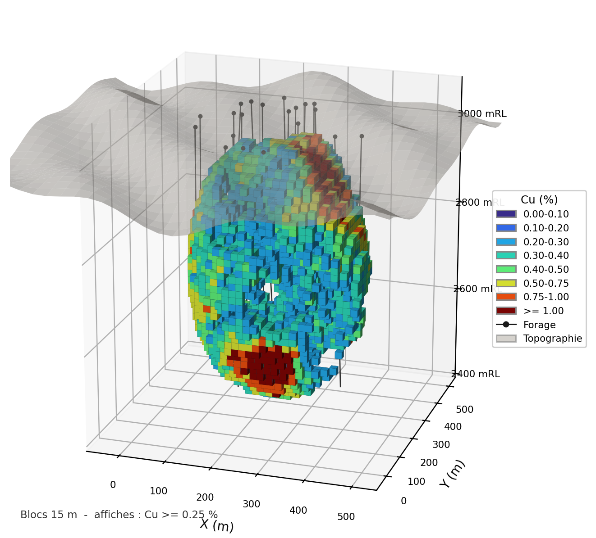
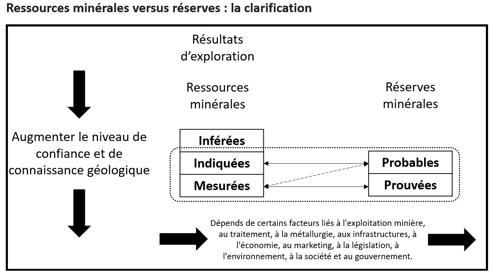
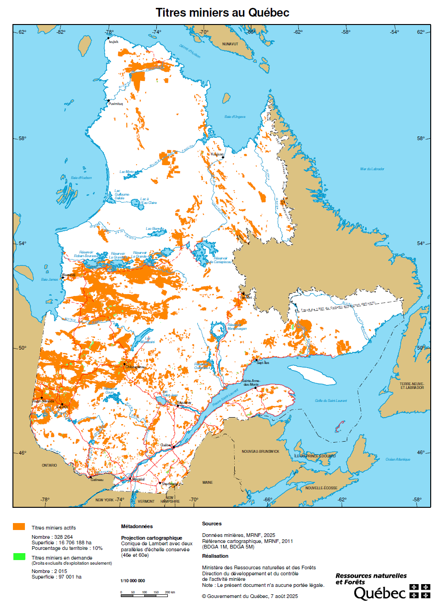
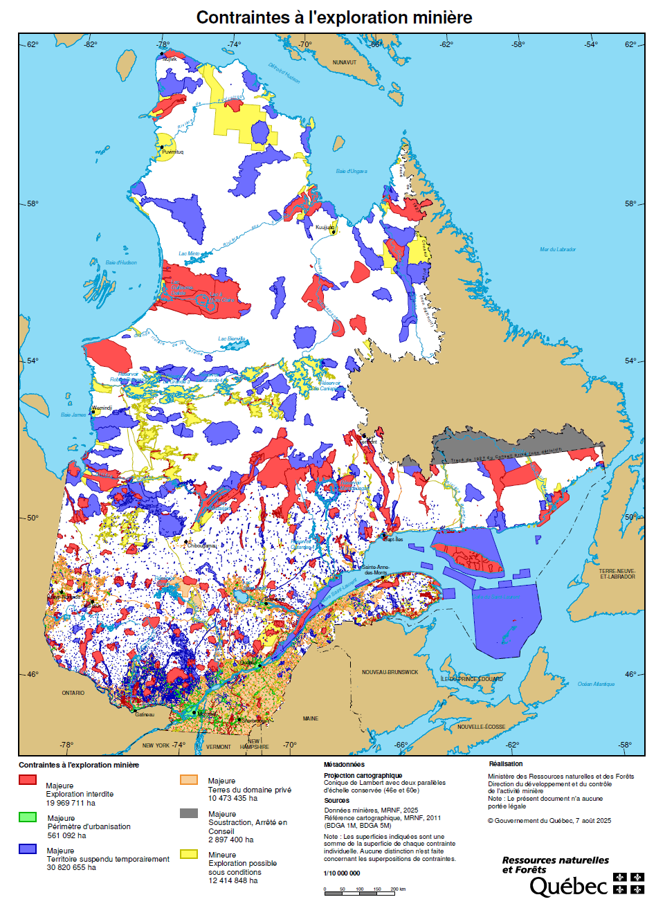
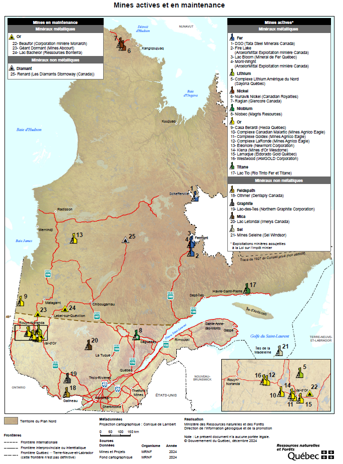
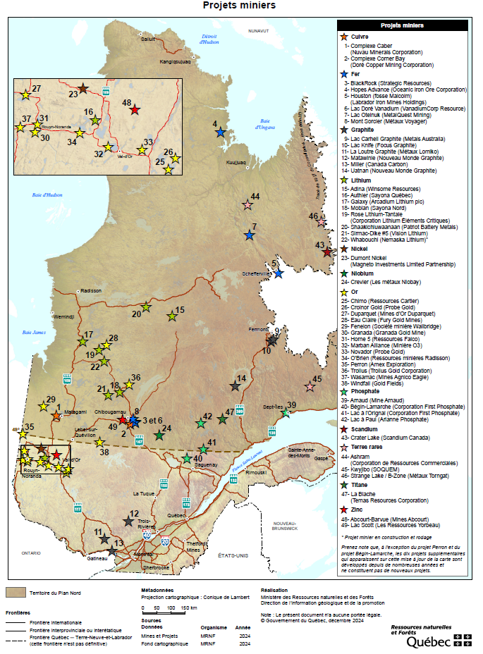

1 Rapport Technique NI 43-101 et Loi sur les mines
Cette section présente la norme canadienne relative aux rapports techniques miniers : le rapport NI 43-101. Il rassemble une grande quantité d’informations sur les projets miniers, de la phase d’exploration à l’exploitation. Ce chapitre aborde ces aspects, puis conclut par une introduction à la Loi sur les mines du Québec.
À la fin de ce chapitre, vous serez en mesure de :
Expliquer le rôle du rapport technique NI 43-101 dans la communication de l’information relative aux projets miniers au Canada;
Distinguer les catégories de ressources minérales et de réserves minérales, ainsi que les niveaux de confiance associés;
Expliquer le rôle, les responsabilités et les obligations de la personne qualifiée (PQ) dans la préparation d’un rapport conforme à la NI 43-101;
Repérer les éléments de base de la Loi sur les mines du Québec qui encadrent l’exploration, l’exploitation et la restauration des sites miniers.
Ce chapitre s’appuie principalement sur le livre suivant :
Rossi, M. E., & Deutsch, C. V. (2014). Mineral Resource Estimation. Springer Netherlands.
1.1 Divulgation des ressources minières
Une ressource minérale ne correspond pas à une quantité connue avec certitude. Elle constitue une estimation fondée sur les données disponibles, l’interprétation géologique du gisement, les méthodes employées et les hypothèses retenues pour sa modélisation. Sa classification reflète le niveau de confiance associé à cette estimation, lequel dépend notamment de la quantité et de la qualité des données, de la continuité géologique et des teneurs, ainsi que des choix méthodologiques effectués. Ainsi, deux équipes peuvent parvenir à des classifications différentes pour une même ressource lorsque leurs hypothèses, leurs interprétations ou leurs méthodes diffèrent, tout en respectant le cadre réglementaire applicable.
La divulgation d’une ressource vise donc à communiquer non seulement une quantité et une teneur, mais également les données, les méthodes, les hypothèses et les incertitudes qui soutiennent cette estimation. Elle doit permettre au lecteur d’évaluer la robustesse du modèle et de comprendre les limites de l’information présentée.
Introduction aux rapports techniques miniers
Les sociétés minières qui publient de l’information sur des projets d’exploration ou d’exploitation au Canada doivent respecter des règles strictes de divulgation. La principale référence est la norme canadienne NI 43-101 (Administrators 2005), qui encadre la manière dont les informations techniques relatives aux propriétés minières doivent être préparées, vérifiées et communiquées.
L’objectif de cette norme est de s’assurer que les informations publiées soient exactes, vérifiables et non trompeuses. Elle vise notamment à protéger les investisseurs contre les déclarations exagérées, erronées ou frauduleuses relatives au potentiel d’un projet minier.
La mise en place de la NI 43-101 est fortement associée au scandale Bre-X, l’un des plus importants scandales miniers et boursiers au Canada. Dans les années 1990, Bre-X prétendait avoir découvert un gisement d’or contenant 200 millions d’onces (soit environ 6 200 tonnes) dans le cadre du projet Busang en Indonésie, ce qui aurait représenté jusqu’à 8 % des stocks d’or mondiaux à cette époque. Portée par ces annonces, la valeur boursière de l’entreprise a grimpé jusqu’à près de 6 milliards de dollars, attirant autant de petits épargnants que de grands investisseurs. Or, les échantillons de carottes de forage avaient été salés, c’est-à-dire enrichis par l’ajout d’or provenant d’une source externe : la découverte était montée de toutes pièces. Lorsque la fraude a été révélée en 1997, l’action s’est effondrée et sa capitalisation s’est évaporée presque entièrement, causant des pertes majeures à ceux qui avaient investi sur la bonne foi des données divulguées. C’est précisément ce risque financier — voir la valeur d’un titre reposer sur une ressource qui n’existe pas — qui a rendu nécessaire un encadrement plus rigoureux de l’information technique diffusée aux marchés financiers.
Aujourd’hui, le rapport technique NI 43-101 est la principale forme de divulgation technique des projets miniers au Canada. Il permet de documenter, de manière structurée et vérifiable, l’état des connaissances relatives à une propriété minérale. On y retrouve autant les informations de base sur le projet que les données géologiques, les travaux d’exploration, les méthodes d’échantillonnage, la qualité des données, l’estimation des ressources et, lorsque le projet est suffisamment avancé, les éléments liés à l’exploitation, au traitement du minerai, aux aspects environnementaux et à l’analyse économique.
Pour un ingénieur ou un géoscientifique, le rapport NI 43-101 est un outil d’évaluation : il permet d’évaluer la qualité des données disponibles, la logique des interprétations proposées et le niveau de confiance accordé aux ressources déclarées. Il aide également à repérer les zones d’incertitude susceptibles d’influencer la valeur du projet, sa faisabilité ou les décisions à prendre ultérieurement.
Pour les investisseurs, ces rapports peuvent être difficiles à lire en raison de leur langage technique et de la quantité d’information qu’ils contiennent. Pour les géoscientifiques et les ingénieurs, ils constituent toutefois une source d’information très riche. Savoir lire, interpréter et expliquer un rapport technique fait donc partie des compétences essentielles de toute ingénieure et de tout ingénieur.
Notion de confiance et niveaux d’incertitude
Une ressource déclarée n’a pas partout le même niveau de confiance. Une zone traversée par plusieurs forages rapprochés, à géologie cohérente et avec des analyses régulières, ne présente pas la même incertitude qu’une zone éloignée des observations ou appuyée sur des informations contradictoires.
Cette différence est essentielle. L’incertitude tient à plusieurs sources : le manque de données, la construction du modèle géologique, la continuité supposée des teneurs et la qualité des informations disponibles. Déclarer une ressource, c’est donc annoncer une quantité de métal ou de minerai et indiquer dans quelle mesure cette quantité est étayée par les données et par l’interprétation géologique.
Plusieurs sources d’incertitude influencent l’estimation d’une ressource :
- les hypothèses géologiques utilisées pour construire le modèle;
- la densité et la répartition spatiale des forages;
- la qualité de l’échantillonnage et des analyses de laboratoire;
- les erreurs de localisation ou de déviation des forages;
- la représentativité des échantillons;
- le traitement statistique des données;
- la modélisation de la continuité géologique;
- la méthode d’estimation ou de simulation choisie.
Deux équipes, partant des mêmes données, peuvent donc aboutir à des modèles différents selon les hypothèses géologiques et les méthodes retenues. La confiance accordée à une estimation augmente lorsque les données sont nombreuses, bien réparties et cohérentes avec la géologie; elle demeure néanmoins une approximation, puisque seule une partie du sous-sol est observée. L’incertitude se décompose alors en deux composantes : la portion non vérifiable du gisement et l’erreur propre à la mesure.
Pour communiquer ce niveau de confiance, les ressources minérales sont classées en trois grandes catégories :
- Ressource mesurée : niveau de confiance élevé, fondé sur des données nombreuses, rapprochées et de bonne qualité;
- Ressource indiquée : niveau de confiance intermédiaire, suffisant pour appuyer certaines études techniques et économiques;
- Ressource inférée : niveau de confiance plus faible, associé à une incertitude accrue, rendant impossible la prise de toute décision économique.
Cette classification influence directement la manière dont les résultats peuvent être utilisés. Une ressource inférée, par exemple, demeure trop incertaine pour fonder, à elle seule, une étude de faisabilité. Elle peut orienter la suite des travaux, mais elle ne fournit pas encore un niveau de confiance suffisant pour appuyer des décisions économiques importantes. Les ressources indiquées et mesurées, lorsque les données sont plus nombreuses et mieux comprises, permettent d’approfondir l’analyse technique et financière.
Cette classification dépend aussi du regard des personnes qualifiées, qui doivent juger et/ou évaluer si les données sont suffisantes, fiables et cohérentes avec la compréhension géologique du gisement, afin d’en attribuer un degré d’incertitude.
En géostatistique, l’incertitude ne disparaît pas parce qu’un modèle a été construit. Elle peut toutefois être mieux décrite. La variance de krigeage, par exemple, donne une indication de l’erreur d’estimation attendue, en fonction de la position des données et du modèle spatial utilisé. Les simulations conditionnelles permettent aussi de considérer le problème autrement, en produisant plusieurs images possibles du gisement plutôt qu’un seul résultat.
Ces outils ne disent pas que le modèle est vrai. Ils servent plutôt à mieux comprendre où l’estimation est plus solide et où elle repose davantage sur l’interprétation. Le rôle de l’ingénieur ou du géoscientifique comprend le calcul de la ressource et la reconnaissance des limites du modèle, dont il faut tenir compte dans les décisions.
1.2 Classification des ressources et des réserves minières
L’estimation d’un gisement minier repose toujours sur des données géologiques incomplètes et incertaines. Il faut donc des définitions normalisées pour communiquer, de manière claire et cohérente, le niveau de confiance associé aux ressources et aux réserves minérales.
Au Canada, les définitions utilisées pour classer les ressources et les réserves minérales proviennent de l’Institut canadien des mines, de la métallurgie et du pétrole, aussi appelé ICM ou CIM (Canadian Institute of Mining, Metallurgy and Petroleum). Elles servent ensuite de référence dans les rapports techniques préparés conformément à la norme NI 43-101.
L’estimation et la divulgation des ressources et des réserves minérales s’appuient généralement sur un modèle de blocs, lequel peut être considéré comme une discrétisation tridimensionnelle de l’enveloppe minéralisée. Ce modèle constitue le support numérique utilisé pour représenter la distribution spatiale des propriétés géologiques, géotechniques et économiques du gisement.
Introduction aux modèles de blocs
Un modèle de blocs est une représentation discrétisée du volume étudié. Puisqu’il n’est pas possible d’estimer directement une teneur en tout point du sous-sol, le gisement est subdivisé en blocs de dimensions définies, par exemple 15 m × 15 m × 15 m. Une valeur, estimée ou simulée, est ensuite attribuée à chacun de ces blocs à partir des données disponibles, des interprétations géologiques et des méthodes d’estimation retenues. Combinée au volume du bloc et à sa densité, la teneur ainsi attribuée permet de calculer directement le tonnage de métal qu’il contient.
Chaque bloc constitue donc une unité de calcul à laquelle peuvent être associées différentes propriétés : teneur, densité, type de roche, caractéristiques géophysiques, données géochimiques ou type d’altération. Il peut également porter des variables catégorielles ou probabilistes, comme la probabilité d’appartenance à une zone minéralisée, à une unité géologique donnée, ou à une classe de potentiel de drainage minier acide (DMA) ou de drainage neutre contaminé (DNC).

L’objectif est ensuite d’estimer les propriétés de chacun de ces blocs à partir des données disponibles. Comme les forages n’observent qu’une faible portion du gisement, les valeurs attribuées aux blocs doivent être déduites des observations existantes, de l’interprétation géologique et, le cas échéant, par des méthodes géostatistiques.
Le modèle de blocs devient alors un outil de planification minière. Dans certaines méthodes d’exploitation, notamment lorsqu’on cherche à extraire préférentiellement les zones les plus riches du gisement, les décisions peuvent être prises à l’échelle des blocs. On parle alors d’exploitation sélective.
En exploitation sélective, l’idée est de séparer les parties du gisement qui valent la peine d’être exploitées de celles qui ne le sont pas. Le modèle de blocs permet d’effectuer cette sélection. Chaque bloc est évalué selon sa teneur et sa valeur économique : les blocs rentables peuvent être envoyés au concentrateur, tandis que les blocs moins intéressants sont dirigés vers la halde à stérile ou exclus du plan d’exploitation. Le plus petit volume qu’on peut ainsi trier comme minerai ou comme stérile porte un nom : l’unité d’exploitation sélective (selective mining unit, SMU). Nous reviendrons sur le rôle du support du bloc au chapitre consacré à la variance de bloc.
Il faut aussi garder à l’esprit qu’atteindre un bloc rentable suppose souvent d’extraire d’abord le stérile qui le recouvre ou l’entoure : un bloc riche enfoui sous une épaisse couverture stérile n’a pas la même valeur qu’un bloc riche affleurant. La rentabilité dépend donc de la teneur moyenne du gisement et de l’organisation spatiale des teneurs. Deux gisements de même distribution peuvent présenter des réalités minières opposées : si les blocs à forte teneur forment une zone continue, ils sont faciles à isoler et à exploiter; s’ils sont dispersés et mêlés à des blocs pauvres, l’extraction sélective devient beaucoup moins efficace. La continuité spatiale des zones riches compte autant que la moyenne.
Dans ce manuel, nous utiliserons ce cadre simplifié pour introduire les notions de ressources, de réserves et d’estimation géostatistique. Il faut toutefois retenir que le choix réel d’une méthode d’exploitation dépend de nombreux facteurs, dont la géométrie du gisement, sa profondeur, la distribution des teneurs, les contraintes géotechniques, les coûts d’extraction et le modèle de blocs construit.
🧮 Atelier interactif 1.1 — Modèle de blocs 3D
Explorez huit gisements de cuivre synthétiques en 3D, chacun généré à partir d’une fonction de covariance différente, qui gouverne la continuité spatiale du gisement. Le menu déroulant Style de gisement permet de passer d’un scénario à l’autre.
Pour chaque scénario, ajustez la teneur de coupure pour voir quels blocs seraient considérés comme économiquement exploitables, et utilisez le bouton « Nouveau gisement » pour régénérer une réalisation différente du même style. La forme du gisement (son enveloppe), les forages et la topographie sont également régénérés. Faites pivoter le modèle (glisser) et zoomez (molette) pour comparer la forme et la continuité du gisement entre les scénarios.
La version web de ce document permet de manipuler directement cet atelier en 3D.
Ressources et réserves
Une ressource minérale est une concentration de matière minéralisée présentant des perspectives raisonnables d’extraction économique. Elle repose sur les informations géologiques, les données d’échantillonnage et l’estimation des teneurs : elle décrit le potentiel géologique du gisement.
Une réserve minérale est la partie d’une ressource mesurée ou indiquée dont l’extraction économique est démontrée par une étude technique et économique. Elle correspond à la portion réellement exploitable de ce potentiel, compte tenu de facteurs miniers, métallurgiques, économiques, environnementaux, sociaux, juridiques et réglementaires.
Catégories de ressources et de réserves
Les ressources minérales sont classées en trois catégories reconnues à l’échelle internationale et utilisées dans les rapports conformes à la norme NI 43-101. Ces catégories reflètent des niveaux croissants de confiance géologique.
Ce niveau de confiance ne se résume toutefois pas à une règle numérique unique. Il dépend de plusieurs éléments, tels que la qualité des données, leur densité, leur répartition dans le gisement, la méthode d’estimation utilisée et la compréhension géologique du dépôt. Il repose ainsi sur le jugement professionnel de la personne qualifiée qui a préparer le rapport.
Les définitions présentées ici sont adaptées des CIM Definition Standards, auxquels renvoie la NI 43-101. D’autres codes, comme le JORC en Australasie ou le SME aux États-Unis, suivent une logique comparable.
Définition 1.1 (Ressources Inférées) Partie d’une ressource minérale dont la quantité et la teneur sont estimées sur la base de preuves géologiques et d’un échantillonnage limité. Ces preuves sont suffisantes pour inférer, mais non pour démontrer de façon fiable, la continuité géologique et celle des teneurs. Le niveau de confiance est donc faible. Typiquement, les données proviennent d’affleurements, de tranchées, de travaux de développement ou de forages. La confiance accordée à ces estimations n’est pas suffisante pour permettre une analyse économique — aucune réserve minérale ne peut être définie à partir de cette catégorie.
Définition 1.2 (Ressources Indiquées) Partie d’une ressource minérale pour laquelle la quantité, la teneur, la densité, la forme et les caractéristiques physiques sont estimées avec un niveau de confiance raisonnable. Les données sont suffisamment abondantes et bien réparties pour supposer la continuité géologique et/ou minéralisée, sans pour autant pouvoir la démontrer entièrement. Ce niveau de confiance permet généralement une première analyse économique et la planification préliminaire du projet minier.
Définition 1.3 (Ressources Mesurées) Partie d’une ressource minérale pour laquelle les paramètres géologiques (quantité, teneur, densité, forme, propriétés physiques) sont estimés avec un haut niveau de confiance. Les données disponibles sont suffisamment abondantes et rapprochées pour démontrer clairement la continuité géologique et/ou la continuité de la minéralisation. Ce niveau de certitude permet une planification minière détaillée ainsi qu’une évaluation économique fiable du gisement.
Le passage d’une ressource mesurée ou indiquée à une réserve doit être démontré par une étude de préfaisabilité ou de faisabilité, qui établit qu’au moment de la déclaration l’extraction est raisonnablement justifiée. La Figure 1.2 illustre les facteurs modificateurs qui gouvernent ce passage.

Comme les ressources, les réserves se déclinent en catégories de confiance, qui héritent de la catégorie de la ressource dont elles proviennent.
Définition 1.4 (Réserve prouvée) Partie économiquement exploitable d’une ressource mesurée, dont l’extraction au moment de la déclaration est démontrée par au moins une étude de préfaisabilité. C’est la catégorie de réserve au plus haut niveau de confiance.
Définition 1.5 (Réserve probable) Partie économiquement exploitable d’une ressource indiquée — et, dans certaines circonstances, mesurée —, également démontrée par au moins une étude de préfaisabilité. Une ressource inférée, elle, ne peut jamais être convertie en réserve.
Au regard de ces définitions, une certaine subjectivité demeure et se reflète dans la lecture des rapports techniques conformes à la NI 43-101. Certaines compagnies minières fondent leurs estimations des ressources et des réserves sur des critères qualitatifs, tandis que d’autres recourent à des méthodes quantitatives rigoureuses. En vertu même de ces définitions, toute approche permettant d’en évaluer le niveau de confiance pourrait être acceptée.
🧮 Atelier interactif 1.2 — Classification 3D des ressources : la passe d’estimation et son impact
Cet atelier reprend en 3D le même gisement que l’atelier précédent : seule la légende change, puisqu’elle représente maintenant la classe de ressource de chaque bloc (Mesuré, Indiqué, Inféré, Non classé) plutôt que sa teneur.
Les deux critères de classification sont affichés côte à côte, calculés sur le même gisement et les mêmes forages : seule la règle de classification diffère.
- Passe d’estimation (géométrique) — vue de gauche. Autour de chaque bloc, on vérifie, dans 8 octants, la présence d’un forage (composite) : Mesuré si tous les octants en ont un dans le rayon \(x\), Indiqué si au moins 5 en ont un dans le rayon \(2x\), Inféré si au moins 1 en a un, sinon Non classé.
- Efficacité de krigeage (KE) — vue de droite. L’efficacité du krigeage, \(\mathrm{KE} = 1 - \sigma_{OK}^2 / \sigma^2\), mesure la réduction de la variance obtenue grâce au krigeage, une méthode d’estimation géostatistique. Mesuré si \(\mathrm{KE} \ge 0,6\), Indiqué entre 0,2 et 0,6, Inféré entre 0 et 0,2, sinon Non classé.
Faites pivoter l’un des deux modèles — ils tournent ensemble pour faciliter la comparaison — et ajustez le rayon \(x\) de la passe d’estimation. Les cases Mesuré / Indiqué / Inféré permettent d’isoler une classe à la fois dans les deux vues. Comparez : le critère géométrique dépend surtout de la densité et de la disposition des forages, tandis que le critère KE tient également compte de la continuité spatiale du gisement.
Consulté la version web du document pour l’atelier.
<div class="gw-spinner"></div>
<p>Chargement du modèle de blocs et de la classification (≈ 40 ko)…</p>
Cet exercice illustre bien la part de jugement professionnel évoquée plus haut : selon le critère retenu, géométrique ou fondé sur l’efficacité de krigeage, la même réalité géologique peut donner lieu à des classifications différentes. Cette diversité d’approches se retrouve d’ailleurs, d’une compagnie minière à l’autre, dans la lecture des rapports techniques conformes à la NI 43-101.
Disponibilité des rapports techniques NI 43-101
Les rapports techniques conformes à la NI 43-101 sont publics et peuvent être consultés librement, notamment sur le site SEDAR+ (le portail de Dépôt, de Déclaration et de Recherche d’information sur les marchés des capitaux du Canada, accessible à l’adresse SEDAR+).
1.3 Personnes qualifiées
La classification des ressources et des réserves repose en partie sur une évaluation professionnelle. Ce jugement doit toutefois être encadré. Dans le cadre de la norme NI 43-101, cette responsabilité incombe à la personne qualifiée (PQ). La PQ possède l’expérience et les compétences nécessaires pour évaluer la fiabilité des informations techniques, vérifier les données disponibles, interpréter les incertitudes et assumer la responsabilité professionnelle des sections du rapport qu’elle signe.
Pour participer à la rédaction d’un rapport conforme à la NI 43-101, une personne qualifiée doit satisfaire à certaines conditions. Elle doit notamment : (i) posséder une formation appropriée, (ii) être membre d’une association professionnelle reconnue, avec les obligations déontologiques qui y sont associées, et (iii) détenir une expérience pertinente dans le domaine concerné.
Ainsi, une PQ est généralement une ingénieure, un ingénieur, une géologue ou un géologue possédant au moins cinq ans d’expérience pertinente en exploration minérale, en développement ou en exploitation minière, ou encore en évaluation de projets miniers. Elle doit également être membre en règle d’un ordre professionnel reconnu et démontrer que son expérience est pertinente pour le projet auquel elle participe.
Par exemple, selon les définitions de l’ICM, une personne qui agit comme PQ pour l’estimation des réserves minérales d’un gisement d’or alluvial doit posséder une expérience pertinente de ce type de gisement. Cette expérience doit porter à la fois sur le contexte géologique, à savoir les gisements alluviaux, et sur la substance évaluée, à savoir l’or. Ainsi, une expérience acquise sur des gisements alluviaux contenant d’autres minéraux ne suffit pas nécessairement à être reconnue comme pertinente pour un gisement d’or alluvial, car les méthodes d’extraction peuvent être différentes. L’expertise doit être directement liée au type de minéralisation et aux enjeux propres au projet évalué.
Au Québec, l’ordre professionnel reconnu est généralement l’Ordre des ingénieurs du Québec (OIQ) ou l’Ordre des géologues du Québec (OGQ).
Expérience de la personne qualifiée
La compétence d’une personne qualifiée ne tient pas à son seul titre : elle dépend d’une expérience pertinente, évaluée au cas par cas selon le type de gisement, la substance et le contexte géologique. Cette expérience est essentielle, car la PQ engage sa responsabilité professionnelle quant aux informations techniques qu’elle prépare, vérifie ou signe. Dans l’exercice de cette responsabilité, elle doit notamment être en mesure de :
- respecter le code de déontologie de son ordre professionnel (p.ex. OIQ ou OGQ);
- respecter les lignes directrices et les normes de l’ICM;
- réaliser uniquement des travaux relevant de son domaine de compétence;
- communiquer clairement les principaux risques et incertitudes associés au projet;
- s’assurer que les documents de divulgation de l’émetteur reflètent fidèlement ses conclusions et ne déforment pas ses propos.
Responsabilités de la personne qualifiée
La PQ doit se conformer aux normes professionnelles et aux meilleures pratiques de l’industrie. Les autorités de réglementation ont indiqué que « la personne qualifiée doit être clairement convaincue qu’elle serait en mesure de se présenter devant ses pairs et de démontrer sa compétence ainsi qu’une expérience pertinente en lien avec la substance, le type de gisement et le contexte considérés ».
La visite du site constitue une étape importante de la préparation d’un rapport technique conforme à la norme NI 43-101. En règle générale, la PQ principale responsable du rapport doit effectuer cette visite afin de vérifier le contexte du projet, les conditions du terrain et la cohérence des informations techniques présentées.
Un rapport technique peut être préparé par plusieurs personnes qualifiées. Chacune intervient alors dans son propre champ d’expertise : géologie, estimation des ressources, métallurgie, environnement ou autres aspects du projet. Chaque personne signe les parties du rapport auxquelles elle a réellement contribué et pour lesquelles elle possède les compétences nécessaires. Cette façon de faire permet de répartir les responsabilités entre les spécialistes, tout en veillant à ce que chaque partie du rapport soit examinée par la bonne personne.
La vérification des données est également un élément clé de la NI 43-101. La PQ doit indiquer explicitement si cette vérification a été effectuée. Si elle ne l’a pas été, elle doit en expliquer les raisons.
Une PQ ne doit signer que les sections pour lesquelles elle possède l’expertise requise et dont elle a vérifié le contenu. Elle ne doit pas endosser des informations préparées par une autre personne sans avoir effectué une vérification indépendante suffisante.
Certificats et consentements
Toute PQ ayant rédigé tout ou une partie d’un rapport technique doit fournir :
- Un certificat (conformément à la section 8.1(2) de la NI 43-101), incluant notamment :
- Un résumé de son expérience pertinente;
- Les sections du rapport dont elle est responsable;
- Une déclaration d’indépendance vis-à-vis de l’entreprise.
- Un consentement écrit, dans lequel la PQ :
- Autorise la diffusion publique du rapport technique;
- Confirme que les informations contenues dans les documents publics (ex. : communiqué de presse, formulaire annuel) reflètent fidèlement le contenu du rapport technique.
Une PQ ne peut être tenue responsable si l’entreprise cite ses propos de manière erronée, sauf si elle a donné son consentement après révision du document de divulgation. Elle ne doit donc jamais accorder son consentement à l’avance.
1.4 Contenu du rapport NI 43-101
Le rapport rassemble les informations disponibles au moment de sa préparation, que le projet soit au stade de l’exploration, du développement ou de la production. Les données y sont organisées, interprétées et vérifiées par les PQ responsables des différentes sections. Il décrit le projet et montre sur quelles informations reposent les conclusions présentées.
Le rapport comprend notamment :
- Une page de titre : elle indique le titre du rapport technique, l’emplacement du projet minier, le nom et le titre professionnel de chacune des personnes qualifiées, ainsi que la date d’effet du rapport.
- Une page de signature : située au début ou à la fin du rapport, elle est signée par les PQ conformément aux exigences de la norme. La date d’effet du rapport et la date de signature doivent y figurer.
- Une table des matières : elle présente l’organisation du rapport, y compris les sections, les figures et les tableaux.
La norme impose une structure relativement rigide, organisée en rubriques obligatoires ou facultatives. Toutes les rubriques ne sont pas nécessairement complétées : elles doivent être traitées lorsque les données pertinentes sont disponibles et applicables au projet étudié.
Liste des rubriques du rapport NI 43-101
Un rapport technique conforme à la norme NI 43-101 est structuré en rubriques normalisées. Cette section présente les titres utilisés dans la version française du rapport, ainsi qu’une brève description du contenu attendu pour chacun d’eux.
Cliquez sur chaque rubrique pour afficher sa description (version en ligne).
1. Résumé
Description détaillée du terrain et de sa localisation, des propriétaires du projet, du cadre géologique et de la minéralisation. État d’avancement des travaux d’exploration, de développement et d’exploitation, estimations des ressources et des réserves minérales, conclusions et recommandations de la personne qualifiée.2. Introduction
Identification de l’émetteur et du destinataire, mandat et objectif du rapport, sources des données utilisées, détails sur la visite de terrain de chaque personne qualifiée (ou justification de son absence).3. Recours à d’autres experts
Présentation des contributions d’experts externes ou d’autres professionnels impliqués dans l’analyse ou la rédaction du rapport.4. Description et emplacement du terrain
Superficie, emplacement géographique, type de titre minier (claim, permis, concession), droits de surface et d’accès, obligations de conservation, redevances, obligations environnementales et permis nécessaires.5. Accessibilité, climat, ressources locales, infrastructure et géographie physique
Topographie, altitude, végétation, voies d’accès, proximité d’une agglomération, moyens de transport, climat et saison d’exploitation. Si pertinent : besoins en électricité et en eau, aires de stockage des stériles et des résidus, sites pour l’usine de traitement.6. Historique
Propriétaires antérieurs et changements de propriété, travaux réalisés par les anciens exploitants (type, montant, résultats), estimations historiques des ressources et réserves (art. 2.4), toute production antérieure sur le terrain.7. Contexte géologique et minéralisation
Géologie régionale et locale, zones minéralisées majeures, lithologie des épontes, contrôles géologiques, longueur/largeur/profondeur et continuité de la minéralisation, type et distribution géographique de la minéralisation.8. Types de gîtes minéraux
Nature des gîtes (or, cuivre, zinc, etc.), caractéristiques géologiques, modèle géologique appliqué à la prospection — ce modèle oriente les méthodes et techniques d’exploration du programme.9. Travaux d’exploration
Travaux réalisés (hors forage) : méthodes utilisées (levés géophysiques, géochimiques, prospection), techniques d’échantillonnage, emplacement et densité des échantillons, résultats significatifs avec interprétation.10. Forage
Méthodes de forage, résultats pertinents, facteurs affectant la fiabilité (récupération, échantillonnage). Pour les terrains en phase préliminaire : emplacement, azimut, inclinaison, profondeur des intervalles. Relation entre longueur de l’échantillon et épaisseur réelle de la minéralisation si l’orientation est connue.11. Préparation, analyse et sécurité des échantillons
Méthodes de préparation, contrôle de qualité avant laboratoire, procédés de fendage et réduction, mesures de sécurité, méthodes d’analyse, certification des laboratoires, procédures d’assurance-qualité (AQ/CQ), opinion de la PQ sur l’adéquation des procédés.12. Vérification des données
Étapes de vérification effectuées par la PQ (examen des sources, comparaison de jeux de données, validation), limites de la vérification et justification, avis de la PQ sur la qualité et la pertinence des données pour les conclusions du rapport.13. Essais de traitement des minerais
Nature et étendue des essais métallurgiques, résultats pertinents, hypothèses sur les taux de récupération, représentativité des échantillons par rapport aux types de minéralisation, éléments délétères pouvant affecter l’extraction rentable.14. Estimations des ressources minérales (obligatoire si applicable)
Hypothèses clés, méthodes et paramètres d’estimation suffisamment détaillés pour qu’un lecteur informé comprenne le processus. Respect des articles 2.2, 2.3 et 3.4 de la norme. Si plusieurs métaux : teneur de chacun, cours, taux de récupération et facteurs de conversion. Facteurs environnementaux, juridiques et sociopolitiques pouvant influencer les estimations. Les quantités et teneurs doivent être arrondies pour indiquer leur caractère approximatif.15. Estimations des réserves minérales
Méthodes et paramètres de conversion des ressources en réserves, conformité aux articles 2.2, 2.3 et 3.4. Si plusieurs métaux : teneur de chacun, cours et taux de récupération. Facteurs miniers, métallurgiques, d’infrastructure ou de permis susceptibles d’influencer significativement les réserves.16. Méthodes d’exploitation
Vue d’ensemble des méthodes d’exploitation envisagées et de leur adéquation aux ressources disponibles. Paramètres géotechniques et hydrologiques, taux de production, durée de vie de la mine, facteurs de dilution, travaux de décapage et de développement souterrain, équipements requis.17. Méthodes de récupération
Résultats des essais ou données d’exploitation sur le degré de récupération. Description ou schéma de l’usine de traitement (flottation, lixiviation en tas, gravité, etc.), plan de l’usine et caractéristiques des équipements, besoins en énergie, en eau et en réactifs.18. Infrastructures du projet
Routes, voies ferrées, installations portuaires, barrages, haldes, zones de lixiviation, évacuation des stériles, besoins en énergie, pipelines et autres besoins logistiques du projet.19. Études de marché et contrats
Informations sur les marchés de production, études de marché et projections de prix, évaluation des produits, stratégies d’entrée sur le marché. Contrats importants (exploitation, traitement, fonderie, affinage, transport, vente) — conclus ou en cours de négociation.20. Études environnementales, permis et conséquences sociales
Résumé des études environnementales, questions environnementales connues, plans de gestion des résidus et de l’eau, permis requis et état des demandes, exigences sociales ou communautaires, ententes avec les collectivités locales, exigences et coûts de fermeture de la mine.21. Coûts d’investissement et coûts opérationnels
Résumé des estimations des coûts d’investissement (CAPEX) et des coûts opérationnels (OPEX), principales composantes sous forme de tableau, base et justification des estimations.22. Analyse économique
Principales hypothèses retenues, prévisions de trésorerie annuelles sur la durée de vie du projet, indicateurs financiers (VAN, TRI, délai de récupération), résumé des impôts, taxes et redevances applicables, analyses de sensibilité aux prix, aux teneurs et aux coûts.23. Terrains adjacents
Informations issues de publications du propriétaire ou exploitant du terrain adjacent (source indiquée). La PQ précise qu’elle n’a pas vérifié ces informations et qu’elles ne sont pas nécessairement représentatives de la minéralisation du terrain principal.24. Autres données pertinentes
Toute information ou explication supplémentaire nécessaire pour garantir la clarté du rapport et éviter toute ambiguïté ou tromperie.25. Interprétation et conclusions
Résumé des interprétations et résultats clés, risques et incertitudes affectant la fiabilité des données d’exploration ou des estimations, impact de ces risques sur la viabilité économique, conclusions de la PQ.26. Recommandations
Programmes de travaux recommandés avec détail des coûts par phase. Maximum deux phases présentées; chaque phase doit permettre une décision avant de passer à la suivante. Si aucune recommandation significative ne peut être formulée, les raisons doivent être explicitées.27. Références
Liste détaillée des sources citées dans le rapport technique.Remarques finales
Les sections 1 à 14 et 23 à 27 sont obligatoires dans tous les rapports techniques, car elles contiennent des informations disponibles à tous les stades du projet (exploration, préfaisabilité, exploitation). Les sections 15 à 22, quant à elles, dépendent de l’avancement du projet. En phase exploratoire, il est possible qu’aucune information ne soit encore disponible concernant les études économiques ou géométallurgiques. Il est donc normal que ces informations ne soient pas divulguées, puisqu’elles n’existent tout simplement pas à ce stade.
1.5 Loi sur les mines du Québec
Au Québec, l’exploration et l’exploitation minières s’inscrivent dans un cadre légal défini principalement par la Loi sur les mines. Ce cadre fixe les droits d’exploration, les conditions d’exploitation, les autorisations requises ainsi que les obligations de fermeture et de restauration des sites.
La Loi sur les mines complète ainsi le rapport technique NI 43-101. Ce dernier répond surtout à la question « que sait-on du projet et avec quel niveau de confiance? », tandis que la Loi répond à une autre : « quels droits, quelles obligations et quelles autorisations encadrent les activités minières sur le territoire québécois? »
Concrètement, la Loi sur les mines définit les droits permettant d’explorer ou d’exploiter les substances minérales, dont le droit exclusif d’exploration (DEE), anciennement appelé « claim », et les différents baux d’exploitation. Elle s’applique aux terres publiques et privées et couvre également des substances de surface comme le sable et le gravier.
L’obtention d’un DEE confère à son titulaire un droit exclusif d’exploration sur le territoire visé. Ce droit ne signifie toutefois pas que toutes les activités peuvent être exercées librement. Les travaux plus importants, et à plus forte raison l’exploitation d’une mine, doivent respecter d’autres exigences et obtenir les autorisations nécessaires auprès des autorités compétentes.
L’application de la Loi sur les mines diffère entre les régions de la Baie-James et du Nord québécois, en raison de conventions spécifiques conclues, notamment la Convention de la Baie-James et du Nord québécois ainsi que celle du Nord-est québécois.
La Loi sur les mines encadre les différentes étapes d’un projet minier :
- Enregistrement : obtention d’un DEE sur un territoire donné;
- Exploration minière : recherche et prospection des minéraux;
- Exploitation minière : développement des installations et extraction des ressources (mines, carrières, sablières);
- Clôture des opérations minières : fermeture des sites et réhabilitation des terrains.
Face à une forte augmentation du nombre de DEE au cours des cinq dernières années, ainsi qu’aux préoccupations soulevées par la société civile, le gouvernement a lancé une vaste consultation en 2023, puis a déposé le projet de loi 63 au printemps 2024.
L’un des changements visibles porte sur le vocabulaire utilisé. Le terme « claim », longtemps employé, a été remplacé par « droit exclusif d’exploration » ou DEE. Les deux expressions renvoient essentiellement au même type de droit, à savoir celui d’explorer un territoire donné afin d’y rechercher des substances minérales.
Toutefois, afin de préserver la cohérence avec certains contextes historiques, des documents antérieurs ou des rapports techniques plus anciens, le terme « claim » pourra encore être utilisé dans la pratique professionnelle.
Droit minier québécois actuel
Le régime minier au Québec s’appuie encore en grande partie sur le principe du libre accès. Ce système permet à toute personne d’obtenir un DEE, sauf pour certaines substances exclues par la loi, telles que le pétrole, le gaz naturel, la saumure ou certains matériaux de construction. Le fonctionnement repose sur le principe du premier arrivé, premier servi : la première personne à faire la demande obtient l’exclusivité d’explorer un territoire donné et, en cas de découverte, a la priorité pour entamer les démarches d’exploitation.
Sur un terrain privé, le détenteur d’un DEE ne peut pas simplement entrer sur le site sans autorisation. Il doit d’abord obtenir l’accord du propriétaire. Certaines règles particulières peuvent également s’appliquer dans les zones périurbaines ou dans des secteurs où des droits existent déjà. En règle générale, les substances minérales relèvent du domaine public, mais la loi prévoit quelques exceptions, notamment en cas de droits acquis.
Le DEE est aujourd’hui le seul titre d’exploration pour la recherche de substances minérales. Son mode d’acquisition principal est la désignation sur carte, qui tend à devenir exclusif, bien que le jalonnement reste autorisé dans certaines zones pendant une période transitoire. En territoire arpenté, les DEE coïncident avec les lots et les rangs; en territoire non arpenté, ils couvrent une superficie de 30 secondes de latitude (environ 926 mètres) sur 30 secondes de longitude (environ 655 mètres à la latitude 45°), ce qui correspond à une superficie variant de 40 à 61 hectares selon la latitude. Aucun DEE ne peut être obtenu sur un terrain déjà visé par un autre DEE ou par un bail minier. La carte des titres miniers (Figure 1.3) illustre l’étendue de ces droits sur le territoire québécois.
Les titulaires d’un DEE doivent réaliser des travaux statutaires dont le coût minimal varie selon la superficie du terrain, le nombre de périodes de validité écoulées — chaque période étant d’une durée de deux ans — et la localisation du DEE par rapport au 52e parallèle. À titre d’exemple, pour un DEE de 40 hectares situé au sud du 52ᵉ parallèle, le montant minimal exigé est de 1 200 $ pour chacune des trois premières périodes de validité. Il passe ensuite à 1 800 $ pour chacune des trois périodes suivantes, puis atteint un plafond de 2 500 $ pour les périodes subséquentes (tiré du M-13.1, r. 2 - Règlement sur les mines - À jour au 1er février 20261).
Ces travaux peuvent comprendre des études techniques réalisées par un professionnel, la prospection géologique, géophysique ou géochimique, le levé de lignes, le décapage ou l’excavation de roches, l’échantillonnage, le forage et l’analyse de carottes, ainsi que des études de faisabilité ou des travaux de restauration. Les dépenses excédentaires peuvent être reportées sur des périodes futures ou imputées à d’autres DEE.
Les tableaux suivants présentent les dépenses minimales exigées selon la localisation et la superficie du terrain :
| Nombre de périodes de validité du DEE | Moins de 25 ha | 25 à 45 ha | Plus de 45 ha |
|---|---|---|---|
| 1 | 48 $ | 120 $ | 135 $ |
| 2 | 160 $ | 400 $ | 450 $ |
| 3 | 320 $ | 800 $ | 900 $ |
| 4 | 480 $ | 1 200 $ | 1 350 $ |
| 5 | 640 $ | 1 600 $ | 1 800 $ |
| 6 | 750 $ | 1 800 $ | 1 800 $ |
| 7 et plus | 1 000 $ | 2 500 $ | 2 500 $ |
| Nombre de périodes de validité du DEE | Moins de 25 ha | 25 à 100 ha | Plus de 100 ha |
|---|---|---|---|
| 1 | 500 $ | 1 200 $ | 1 800 $ |
| 2 | 500 $ | 1 200 $ | 1 800 $ |
| 3 | 500 $ | 1 200 $ | 1 800 $ |
| 4 | 750 $ | 1 800 $ | 2 700 $ |
| 5 | 750 $ | 1 800 $ | 2 700 $ |
| 6 | 750 $ | 1 800 $ | 2 700 $ |
| 7 et plus | 1 000 $ | 2 500 $ | 3 600 $ |
En plus des dépenses liées aux travaux d’exploration, le titulaire d’un DEE doit également payer des frais d’inscription et de renouvellement. Ces frais varient selon la superficie du terrain, sa localisation et le nombre de DEE inscrits simultanément sur un même feuillet cartographique.
Par exemple, avec la tarification en vigueur au 1er janvier 2026, l’inscription d’un DEE de 25 à 45 hectares coûte 149,00 $ au nord du 52e parallèle. Au sud du 52e parallèle, le coût est de 80,75 $ pour un DEE de 25 à 100 hectares. Le renouvellement suit la même logique et les montants peuvent augmenter si la demande est effectuée dans les 60 jours précédant l’expiration du titre.
Le tableau suivant résume les principaux coûts d’acquisition des DEE selon le contexte de tarification et l’indexation des droits, loyers, redevances et frais applicables en 20262.
| Article du règlement | Description | Spécification | Tarif (au 1er janvier 2026) |
|---|---|---|---|
| Droits d’inscription par droit exclusif d’exploration | Nord du 52e degré de latitude | De 1 à 150 droits exclusifs d’exploration | |
| < 25 ha | 41,50 $ | ||
| 25 à 45 ha | 149,00 $ | ||
| > 45 à 50 ha | 168,00 $ | ||
| > 50 ha | 188,00 $ | ||
| Droits d’inscription par droit exclusif d’exploration | Nord du 52e degré de latitude | Plus de 150 droits exclusifs d’exploration (même journée, même titulaire) | |
| < 25 ha | 207,50 $ | ||
| 25 à 45 ha | 745,00 $ | ||
| > 45 à 50 ha | 840,00 $ | ||
| > 50 ha | 940,00 $ | ||
| Droits d’inscription par droit exclusif d’exploration | Sud du 52e degré de latitude | De 1 à 40 droits exclusifs d’exploration | |
| < 25 ha | 41,50 $ | ||
| 25 à 100 ha | 80,75 $ | ||
| > 100 ha | 122,00 $ | ||
| Droits d’inscription par droit exclusif d’exploration | Sud du 52e degré de latitude | Plus de 40 droits exclusifs d’exploration (même journée, même titulaire) | |
| < 25 ha | 207,50 $ | ||
| 25 à 100 ha | 403,75 $ | ||
| > 100 ha | 610,00 $ | ||
| Droits pour le renouvellement par droit exclusif d’exploration | Nord du 52e degré de latitude | ||
| < 25 ha | 41,50 $ | ||
| 25 à 45 ha | 149,00 $ | ||
| > 45 à 50 ha | 168,00 $ | ||
| > 50 ha | 188,00 $ | ||
| Droits pour le renouvellement par droit exclusif d’exploration | Sud du 52e degré de latitude | ||
| < 25 ha | 41,50 $ | ||
| 25 à 100 ha | 80,75 $ | ||
| > 100 ha | 122,00 $ | ||
| Frais d’inscription au registre public des droits miniers | |||
| Par droit minier | 23,00 $ | ||
| Maximum par acte | 1 868,00 $ | ||
| Droits de participation au tirage au sort | |||
| Par demande d’autorisation | 188,00 $ | ||
| Par droit minier (autres cas) | 188,00 $ |
Permis et baux d’exploitation
Depuis le 1er janvier 2014, les loyers annuels des baux miniers sont calculés par hectare et varient selon que les terres sont concédées ou font partie du domaine de l’État. Par exemple, le montant du loyer annuel pour un bail minier est de 59,25 $/ha si le terrain est situé sur les terres du domaine de l’État ou de 28,25 $/ha si le terrain est situé sur des terres concédées ou aliénées par l’État à des fins autres que minières (M-13.1, r. 2 - Règlement sur les mines - À jour au 1er février 2026).
Le titulaire d’un DEE peut demander un bail minier lorsque les travaux ont permis de démontrer la présence de réserves exploitables, au sens de la Loi sur les mines. Cette démonstration doit être appuyée par un rapport signé par un ingénieur ou un géologue. En règle générale, la superficie du bail ne peut pas dépasser 100 hectares, sauf autorisation particulière du ministère. Le bail est accordé pour une première période de 20 ans. Il peut ensuite être renouvelé trois fois pour des périodes de 10 ans, puis prolongé par périodes de 5 ans après le troisième renouvellement.
Pour les substances minérales de surface (SMS), il existe deux types de baux : exclusifs et non exclusifs. Les loyers dépendent de la durée du bail et de la nature de la ressource. Le montant du loyer que doit acquitter le demandeur de bail exclusif pour l’exploitation de substances minérales de surface autres que la tourbe est fixé selon la durée du bail, conformément au tableau suivant :
| Durée du bail | Montant du loyer |
|---|---|
| 5 ans et moins | 3 974 $ |
| Plus de 5 ans à 6 ans | 4 766 $ |
| Plus de 6 ans à 7 ans | 5 561 $ |
| Plus de 7 ans à 8 ans | 6 361 $ |
| Plus de 8 ans à 9 ans | 7 152 $ |
| Plus de 9 ans à 10 ans | 7 946 $ |
Le montant du loyer pour l’exploitation de la tourbe est de 11 919 $. Les frais à acquitter pour une demande d’augmentation de la superficie d’un territoire faisant l’objet d’un bail exclusif d’exploitation de substances minérales de surface, faite conformément à l’article 146 de la Loi, s’élèvent à 182 $.
Redevances sur les substances minérales de surface
Sauf exemption prévue au troisième alinéa de l’article 155 de la Loi, la redevance due par le titulaire d’un bail d’exploitation de substances minérales de surface, ou par l’exploitant ou la personne visée à l’article 223.1, est fixée selon la quantité extraite ou aliénée, comme indiqué dans le tableau ci-dessous :
| Substances minérales de surface | Montant de la redevance |
|---|---|
| Tourbe | 0,05 $ par ballot standard de tourbe extraite |
| Sable, gravier, argile et autres dépôts meubles | 0,95 $ / m³ de substances extraites (0,36 $ / t.m.) |
| Pierre de taille | 6,00 $ / m³ de substances aliénées |
| Pierre concassée et toute pierre utilisée à des fins de construction | 0,30 $ / t.m. de substances extraites |
| Pierre et sable utilisés comme minerai de silice et toute pierre utilisée pour la fabrication du ciment (calcaire, calcite, dolomie) | 0,50 $ / t.m. de substances extraites |
| Résidus miniers inertes issus du traitement de minerai ou des opérations de pyrométallurgie et autres substances minérales de surface non mentionnées ci-dessus | 0,25 $ / t.m. de substances extraites |
Redevances pour l’exploitation de substances minérales de surface (M-13.1, r. 2 - Règlement sur les mines - À jour au 1er février 2026)
Modifications législatives de 2013
En décembre 2013, un premier volet de modifications à la Loi sur les mines a été adopté (loi 70). Nous résumons ici les points majeurs en deux catégories : obligations et responsabilités, ainsi que la transparence.
Obligations et responsabilités accrues des titulaires de droits miniers
Présenter, avec toute demande de bail minier, une étude de faisabilité du projet ainsi qu’une étude d’opportunité économique et de marché pour la transformation du minerai au Québec.
Obtenir l’approbation ministérielle d’un plan de réaménagement et de restauration minière, ainsi qu’un certificat d’autorisation délivré en vertu de la Loi sur la qualité de l’environnement.
Constituer, dans les trente jours suivant la délivrance du bail minier, un comité de suivi visant à favoriser l’implication de la communauté locale.
Fournir une garantie financière couvrant 100 % des coûts anticipés du réaménagement et de la restauration, contre 70 % auparavant.
Commencer les travaux de réaménagement et de restauration dans les trois ans suivant la cessation des activités, sauf prolongation accordée par le ministère.
Se conformer aux nouvelles sanctions en cas d’infraction, dont les amendes varient désormais de 1 000 $ à 1 000 000 $ pour une personne physique et de 3 000 $ à 6 000 000 $ pour une personne morale.
Transparence accrue
Transmettre chaque année à la ministre un rapport précisant notamment la quantité et la valeur du minerai extrait au cours de l’année précédente, ainsi que le montant des redevances versées en vertu de la Loi sur l’impôt minier.
Rendre publics, par l’intermédiaire du ministère, les plans de réaménagement et de restauration ainsi que tous les autres documents et renseignements obtenus des titulaires de droits miniers, à l’exception des rapports de travaux d’exploration, qui demeurent confidentiels pendant cinq ans après la date des travaux.
Procéder à une consultation publique dans la région concernée avant de présenter une demande de bail minier visant un projet d’exploitation d’une mine métallifère dont la capacité de production est inférieure à 2 000 tonnes métriques par jour.
Soumettre à la procédure d’évaluation et d’examen des impacts sur l’environnement les projets d’usines de traitement ou de mines de minerai métallifère ou d’amiante dont la capacité de traitement est de 2 000 tonnes métriques ou plus par jour, alors qu’auparavant le seuil était fixé à 7 000 tonnes métriques par jour.
Organiser une consultation publique, après le dépôt de la demande, pour tout projet d’exploitation de la tourbe ou tout projet nécessitant un bail minier lié à une activité industrielle ou à l’exportation commerciale.
Modifications législatives de 2024
En novembre 2024, la Loi modifiant la Loi sur les mines et d’autres dispositions (loi 63, chapitre 36) a été adoptée et sanctionnée par l’Assemblée nationale du Québec. Elle est entrée en vigueur le 29 novembre 2024, sauf pour certaines dispositions prévoyant une date différente. Cette loi vise à moderniser la Loi sur les mines afin de mieux intégrer les préoccupations environnementales, de respecter les droits des communautés autochtones et d’améliorer la gestion du territoire. Elle en profite également pour modifier certaines terminologies, notamment en remplaçant la définition de « claim » par « droit exclusif d’exploration ».
Principaux changements apportés par la Loi 63 (2024)
Les modifications apportées à la Loi sur les mines en 2024 peuvent être regroupées en quelques grands thèmes. La synthèse qui suit vise à présenter les principaux changements de manière pédagogique et ne constitue pas un avis juridique.
- Clarification du vocabulaire minier
Le terme « claim » est remplacé par « droit exclusif d’exploration » (DEE). Ce changement vise surtout à franciser et à clarifier le vocabulaire de la loi, sans modifier la nature générale du droit accordé.
- Meilleur encadrement de l’accès au territoire
La loi introduit de nouvelles règles pour limiter ou encadrer l’activité minière dans certains territoires. Les périmètres d’urbanisation sont soustraits de l’activité minière, certaines terres privées peuvent également être exclues, et les territoires incompatibles avec l’activité minière sont mieux définis.
- Participation accrue des municipalités, des communautés autochtones et du public
Les titulaires de droits doivent mieux informer les municipalités locales et les communautés autochtones concernées, notamment par une planification annuelle des travaux d’exploration et par des séances d’information publique. La loi renforce également le rôle des comités de suivi.
- Renforcement des exigences environnementales
Tous les nouveaux projets miniers doivent faire l’objet d’une évaluation environnementale. La loi prévoit aussi des mesures liées à la restauration des sites, à la surveillance post-réaménagement, aux compensations environnementales et à la responsabilité civile en cas de préjudice.
- Réduction de la spéculation minière
La loi introduit des mesures visant à limiter l’acquisition ou le renouvellement de droits miniers sans travaux réels. Elle prévoit notamment des critères de qualification, des limites au paiement compensatoire utilisé pour renouveler un droit et certaines restrictions à la cession de droits.
- Modernisation de la gestion des droits miniers
La loi permet de moduler certains droits et obligations, de regrouper des droits exclusifs d’exploration contigus et d’encadrer davantage les avis de début ou de reprise des travaux. Elle donne ainsi à l’État davantage de moyens pour gérer les droits miniers en fonction du contexte territorial et des intérêts publics.
- Valorisation des résidus miniers et économie circulaire
La Loi 63 introduit également des mesures visant à favoriser la valorisation des résidus miniers. Un bail spécifique peut être établi pour leur exploitation, assorti d’obligations de suivi et de rapport. Cette orientation s’inscrit dans une logique d’économie circulaire.
Cartes des titres miniers, des contraintes à l’exploration et des projets miniers au Québec
Les cartes présentées dans cette section permettent de visualiser la répartition des titres miniers, des contraintes à l’exploration, des mines actives et des principaux projets miniers au Québec. Elles offrent un aperçu du développement minier sur le territoire québécois et permettent de mieux comprendre les liens entre les droits miniers, l’occupation du territoire, les contraintes réglementaires et les activités d’exploration ou d’exploitation.
Les données cartographiques utilisées sont tirées des ressources officielles du ministère des Ressources naturelles et des Forêts du Québec (MRNF). Les cartes peuvent être consultées directement aux adresses suivantes :
Les cartes reproduites dans cette section sont présentées à des fins pédagogiques. Elles reflètent l’état des données disponibles au moment de leur consultation, soit en 2025. Comme les titres miniers, les droits d’exploration, les contraintes territoriales et les projets miniers peuvent évoluer dans le temps, il est recommandé de consulter les plateformes officielles du MRNF pour obtenir l’information la plus récente.
Titres miniers actifs et contraintes à l’exploration
La Figure 1.3 présente la répartition des droits exclusifs d’exploration au Québec. Les titres actifs sont représentés en orange, tandis que les titres en demande sont indiqués en vert. Cette carte illustre l’étendue importante des droits miniers sur le territoire québécois.

La Figure 1.4 présente les principales contraintes à l’exploration minière. Ces contraintes incluent notamment les zones où l’exploration est interdite, les périmètres d’urbanisation, les territoires temporairement suspendus, les terres du domaine privé, les soustractions, les arrêtés en Conseil et les secteurs où l’exploration demeure possible sous certaines conditions.

Mines actives, mines en maintenance et projets miniers
La Figure 1.5 présente les mines actives et celles en maintenance au Québec. Elle permet d’observer la diversité des substances exploitées, notamment l’or, le fer, le lithium, le nickel, le niobium, le titane, le graphite, le sel et d’autres substances minérales.

La Figure 1.6 présente les principaux projets miniers au Québec. Elle met en évidence la diversité des substances visées par les projets en développement, notamment le cuivre, le fer, le graphite, le lithium, le nickel, le niobium, l’or, le phosphate, le scandium, les terres rares, le titane et le zinc.
